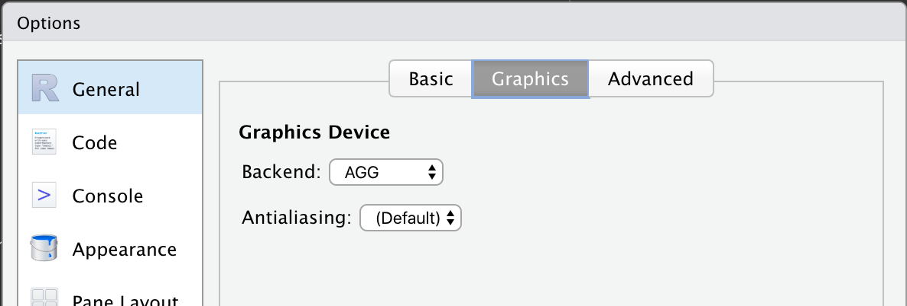
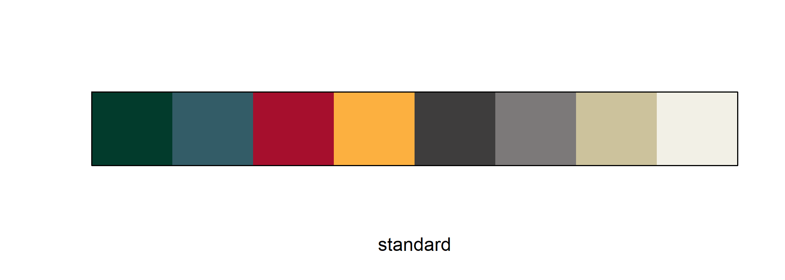
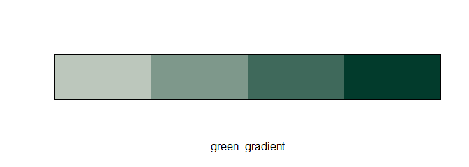
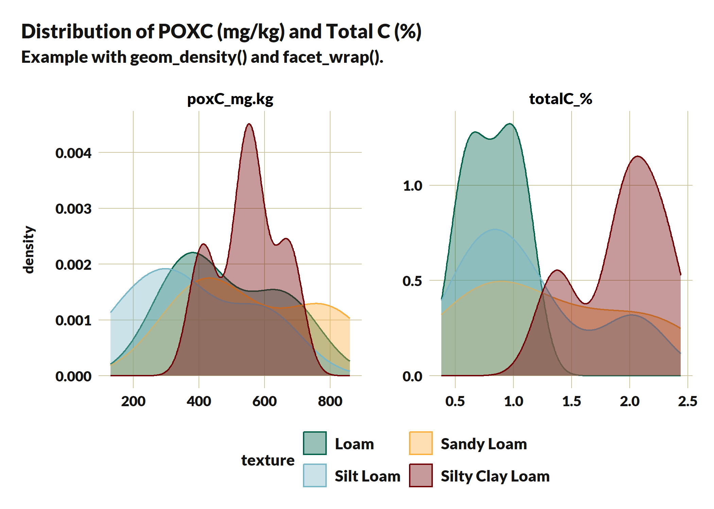
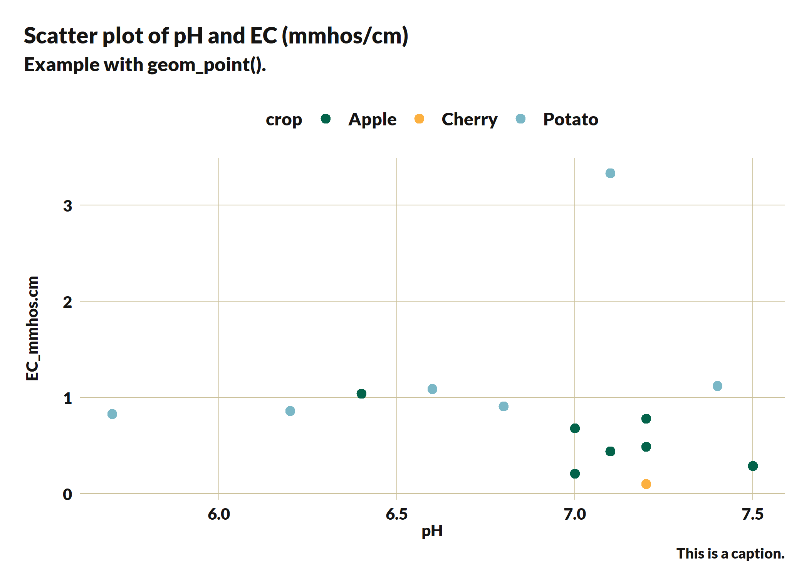
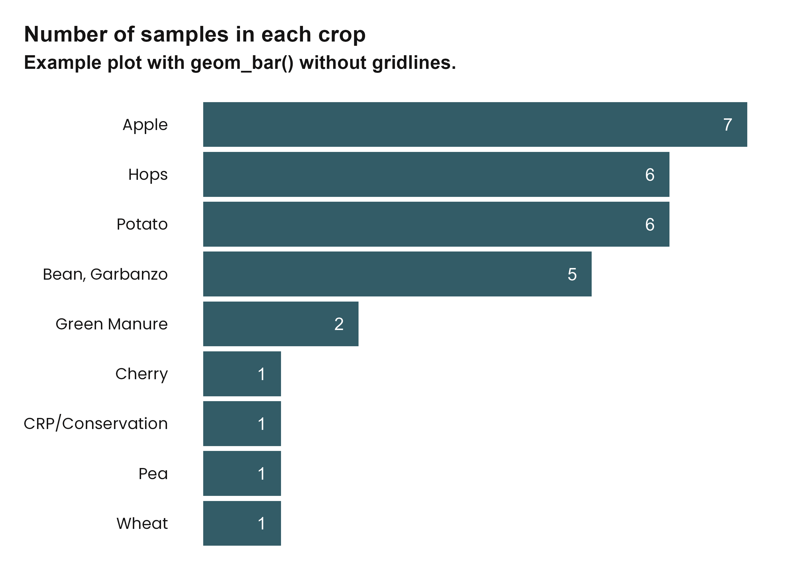
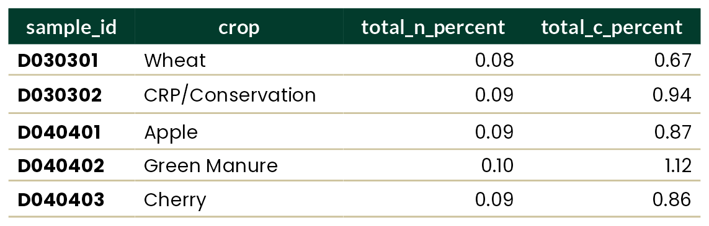

Inspired by other branding R packages such as glitr, ratlas, and nmfspalette, washi provides color palettes and themes consistent with Washington Soil Health Initiative (WaSHI) branding. This package is to be used only by direct collaborators within WaSHI, though you are welcome to adapt the package to suit your own organization’s branding.
Learn what functions are available and how to use them on the function reference webpage.
For help within RStudio, place your cursor within the function name then press <F1> to open the help page or <F2> to open the function source code.
Installation
Install washi from CRAN with:
install.packages("washi")Or, you can install the development version of washi from GitHub with:
# install.packages("devtools")
devtools::install_github("WA-Department-of-Agriculture/washi")Then load the package with:
Fonts
washi uses Poppins and Lato fonts through the ragg and systemfonts packages. You can install these fonts on your computer with:
# install.packages("ragg")
# install.packages("systemfonts")
washi_install_fonts()
#> ℹ To install the fonts on Windows:
#> • Select all .ttf files in the newly opened directory.
#> • Right-click + Install.
#> • Restart RStudio.
To make these fonts available in RStudio, set the Graphics band-end to use AGG in the RStudio options dialog box.

To make these fonts available when knitting to RMarkdown or Quarto, use the following chunk setting:
knitr::opts_chunk$set(dev = "ragg_png")Learn more about ragg: https://ragg.r-lib.org/index.html.
Palettes
To list the names of all available palettes, call names(washi_pal). To view a palette, use the washi_pal_view() function.
All WaSHI standard colors
This palette is primarily to access individual brand colors for fonts, table headers, graphic backgrounds, etc. These colors, when used together in plots, are not accessible to those who may have color blindness.
Individual colors can be accessed with washi_pal[["standard"]][["green"]].
washi_pal_view("standard")
Color gradients
Available in green, blue, red, and gold.
washi_pal_view("green_gradient", n = 4, reverse = TRUE)
Data
washi provides an example dataset, which was subset and anonymized from the WaSHI State of the Soils Assessment. This dataset comes in a long, tidy form with one measurement per row; and in a wide form with one sample per row. Its purpose is to provide an example soils dataset to use in plots and tables.
Plots
washi provides ggplot2 scale and theme functions that apply WaSHI colors, fonts, and styling.
Example workflow:
library(ggplot2)
# 1. Prepare data
example_data_long |>
subset(measurement %in% c("totalC_%", "poxC_mg.kg") &
!texture == "Loamy Sand") |>
# 2. Pipe to ggplot()
ggplot(aes(x = value, fill = texture, color = texture)) +
labs(
title = "Distribution of POXC (mg/kg) and Total C (%)",
subtitle = "Example with geom_density() and facet_wrap()."
) +
geom_density(alpha = 0.4) +
facet_wrap(. ~ measurement, scales = "free") +
# 3. Add washi_theme() with argument to change legend position
washi_theme(legend_position = "bottom") +
# 4. Add washi_scale()
washi_scale() +
# 5. Tweak for your specific plot
xlab(NULL) +
guides(col = guide_legend(nrow = 2, byrow = TRUE))
Scatter plot
# Single geom_point plot
example_data_wide |>
subset(crop %in% c("Apple", "Cherry", "Potato")) |>
ggplot(aes(x = pH, y = Mn_mg.kg, color = crop)) +
labs(
title = "Scatter plot of pH and Mn (mg/kg)",
subtitle = "Example with geom_point().",
caption = "This is a caption."
) +
geom_point(size = 2.5) +
washi_theme() +
washi_scale()
Barplot
example_data_wide |>
ggplot(aes(x = forcats::fct_rev(forcats::fct_infreq(crop)))) +
geom_bar(fill = washi_pal[["standard"]][["blue"]]) +
geom_text(
aes(
y = after_stat(count),
label = after_stat(count)
),
stat = "count",
hjust = 2.5,
color = "white"
) +
# Flip coordinates to accomodate long crop names
coord_flip() +
labs(
title = "Number of samples in each crop",
subtitle = "Example plot with geom_bar() without gridlines.",
y = NULL,
x = NULL
) +
# Turn gridlines off
washi_theme(gridline_y = FALSE, gridline_x = FALSE) +
# Remove x-axis
theme(axis.text.x = element_blank())
Tables
washi provides a function to create a flextable with WaSHI colors, fonts, and styling.
ft <- example_data_wide |>
head(5) |>
subset(select = c(
"sampleId",
"crop",
"totalN_%",
"totalC_%"
)) |>
washi_flextable(cols_bold = 1)